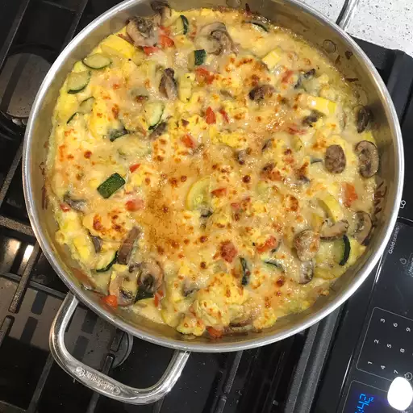

Home
Zucchini-Frittata

Description
This hearty zucchini frittata is full of sliced summer zucchini, bell pepper, and mushrooms topped with mozzarella and Parmesan, finished under the broiler until crispy and golden brown on top.
Ingredients
- 3 medium zucchini, cut into ½-inch slices
- ½ medium green bell pepper, seeded and chopped
- 2 cloves garlic, peeled
- ½ teaspoon salt
- 3 tablespoons olive oil
- 1 small onion, diced
- 16 fresh mushrooms, chopped
- 1 tablespoon butter
- 5 large eggs, beaten
- salt and pepper to taste
- 1 cup shredded mozzarella cheese
- 3 tablespoons shredded Parmesan cheese
Steps
- Preheat the oven to 350 degrees F (175 degrees C).
- Combine zucchini, bell pepper, garlic, and salt in a large, oven-safe skillet. Add 1 cup water and simmer until zucchini is tender, 5 to 7 minutes.
- Drain vegetables in a colander; discard garlic.
- Heat oil in the same skillet over medium heat. Stir in onion, mushrooms, and butter; add drained vegetables. Cook and stir until onion is transparent, about 5 minutes.
Stir in beaten eggs and season with salt and pepper. Reduce the heat to low and cook until eggs are set, about 5 minutes. Remove from the heat and sprinkle mozzarella cheese over top.
- Bake in the preheated oven for 10 minutes. Remove from the oven and turn on the broiler.
- Sprinkle Parmesan cheese over frittata. Place under the preheated broiler until cheese is bubbling and golden brown, about 5 minutes.
- Remove from the oven and let stand for 5 minutes before cutting into 5 wedges and serving.